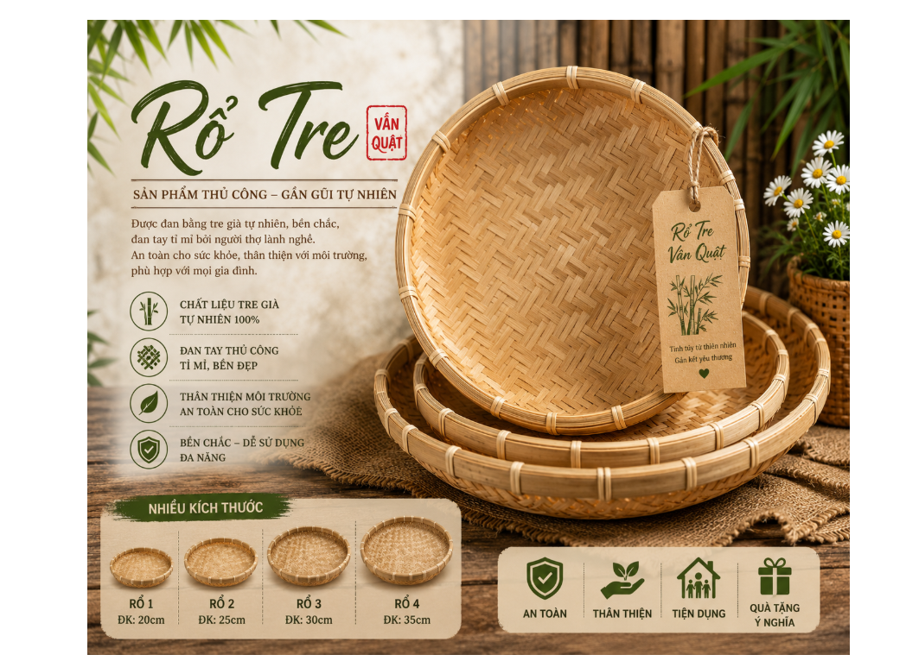

Giữa cuộc sống hiện đại với ngày càng nhiều sản phẩm công nghiệp, những vật dụng được làm từ tre vẫn giữ một vị trí đặc biệt trong đời sống người Việt. Không chỉ mang vẻ đẹp mộc mạc, gần gũi, những sản phẩm tre còn gợi nhớ về làng quê, về đôi bàn tay khéo léo của người thợ và những giá trị truyền thống được gìn giữ qua nhiều thế hệ. Rổ tre Vân Quật là một sản phẩm như thế – giản dị nhưng bền đẹp, thiết thực và giàu giá trị văn hóa.
Được làm từ tre tự nhiên, rổ tre Vân Quật được lựa chọn và đan thủ công với sự tỉ mỉ trong từng công đoạn. Từng nan tre được xử lý, đan kết chắc chắn, tạo nên sản phẩm có độ bền cao nhưng vẫn giữ được vẻ đẹp tự nhiên của chất liệu tre. Những đường đan đều đặn, phần vành được gia cố chắc chắn giúp chiếc rổ vừa đẹp mắt, vừa thuận tiện trong quá trình sử dụng.

Không chỉ là một vật dụng quen thuộc trong gian bếp Việt, rổ tre còn có thể được sử dụng linh hoạt trong nhiều công việc hằng ngày: đựng rau củ, thực phẩm, nông sản; phơi các loại hạt, bánh, sản phẩm khô; trang trí không gian gia đình, cửa hàng, gian hàng nông sản hay làm quà tặng mang đậm bản sắc quê hương.
Một ưu điểm nổi bật của rổ tre là sự thân thiện với môi trường. Tre là nguồn nguyên liệu tự nhiên, gần gũi với đời sống và có thể thay thế nhiều vật dụng bằng nhựa trong sinh hoạt. Việc lựa chọn các sản phẩm tre không chỉ mang đến sự tiện dụng mà còn góp phần hình thành thói quen tiêu dùng xanh, hạn chế sử dụng đồ dùng nhựa dùng một lần và chung tay bảo vệ môi trường.
Mỗi chiếc rổ tre được tạo nên không chỉ bằng nguyên liệu tự nhiên mà còn bằng sự khéo léo, kiên nhẫn và tâm huyết của người làm nghề. Vì vậy, sản phẩm mang trong mình câu chuyện về quê hương, về lao động và về những giá trị truyền thống đáng trân trọng.
Rổ tre Vân Quật – mộc mạc từ chất liệu, tinh tế trong từng đường đan, tiện dụng trong cuộc sống và thân thiện với môi trường. Đây là lựa chọn phù hợp cho những gia đình yêu thích vẻ đẹp tự nhiên, những người muốn đưa nét truyền thống vào không gian hiện đại, cũng như những ai đang tìm kiếm một món quà giản dị nhưng ý nghĩa.
Hãy lựa chọn và sử dụng rổ tre Vân Quật để cùng gìn giữ những giá trị đẹp của nghề thủ công truyền thống, đồng thời lan tỏa lối sống gần gũi với thiên nhiên.
Rổ tre Vân Quật – từ bàn tay người thợ, gửi trọn tình quê.
THÔNG TIN LIÊN HỆ
THEO DÕI CHÚNG TÔI